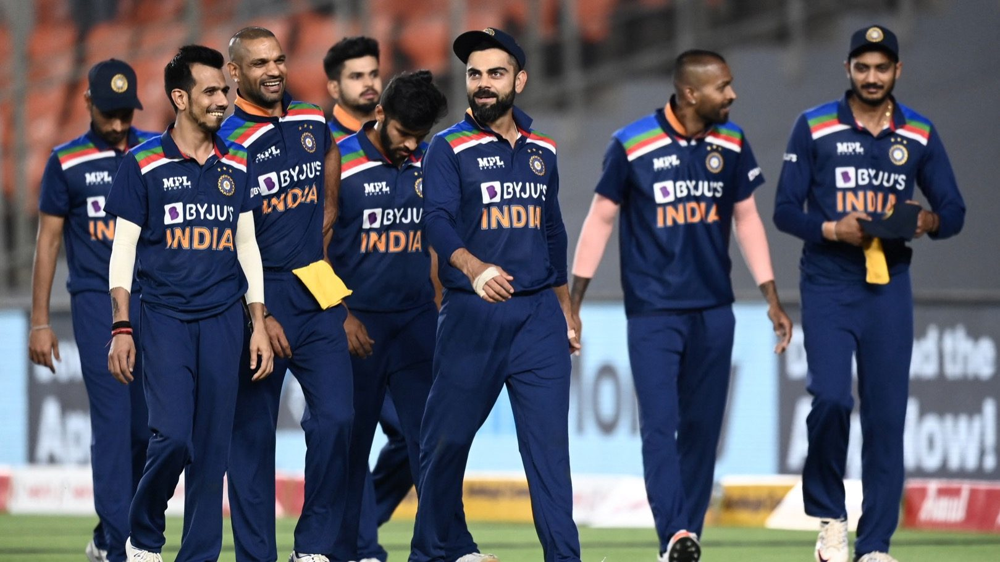
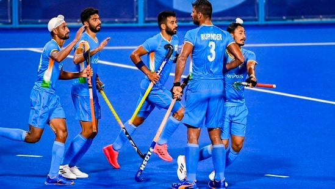
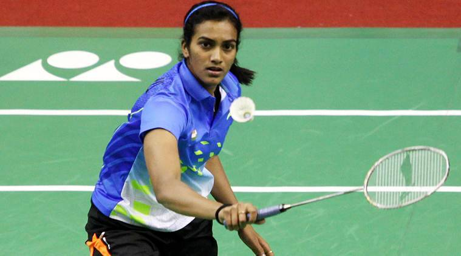

- The craze for Cricket in India is huge, and many consider the players their role models.
- Many cricket fans in India spend hours in front of the television to watch a cricket match.
- Cricket is a fantastic sport that required the use of a bat and ball. Cricket is played between two teams, and each team has 11 players.
- There are majorly three formats of Cricket that are played at the international level. Test matches, One-Day Internationals and Twenty20 Internationals.
- The most popular tournament in India is perhaps the IPL.
- The players dominating indian cricket right now are Virat Kohli, Rohit Sharma, KL Rahul, Ravichandran Ashwin and Ravindra Jadeja among others.
- Players like Sachin Tendulkar, Kapil Dev and MS Dhoni are some absolute legends of Cricket.


- Field hockey is a popularly played sport in our country.
- This game is played on grass, on artificial or watered turf, or on synthetic fields.
- Hockey is played with a curved stick in the form of the letter J. The aim here is to move the ball forward to the goal post with the curve end of the stick and thereby scoring a goal.
- The strikers who play this game are exceptionally skilled at hitting the targets, this will help them to shoot their shots successfully and make them enter the goal post.
- The goalkeeper gets the responsibility of hurdling and stopping the goals so that they can stop the opposite team from scoring.
- Hockey is a sport that requires a lot of practice and dedication.
- The game is played for 75 minutes in a single session. There are two rounds each of thirty-five minutes and one break in between the two sessions.

- Kabaddi is a highly contact team sport. Played between two teams of seven players.
- The objective of the game is for a single player on offence, referred to as the raider, to run into the half of the opposing team, touch out as many of their defenders as possible, and return to their own half of the court, all without being tackled by the defenders, and in a single breath.
- Points are scored for each player tagged by the raider, while the opposing team earns a point for stopping the raider. Players are taken out of the game if they are touched or tackled, but are brought back in for each point scored by their team from a tag or tackle.
- The Pro kabbadi league has influenced the sport a lot. The super tackle and do or die raid rules were introduced in the world cup.
- Kabaddi has been addedd as a game in many international competitions including the Asian Games.

- Badminton is a racquet sport played using racquets to hit a shuttlecock across a net.
- Although it may be played with largerteams, the most common forms of the game are singles (with one player per side) and doubles (with two players per side).
- Badminton is often played as a casual outdoor activity in India.
- Since 1992, badminton has been a Summer Olympic sport with four events: men's singles, women's singles, men's doubles, and women's doubles, with mixed doubles added four years later.
- At high levels of play, the sport demands excellent fitness. Players require aerobic stamina, agility, strength, speed, and precision. It is also a technical sport, requiring good motor coordination and the development of sophisticated racquet movements